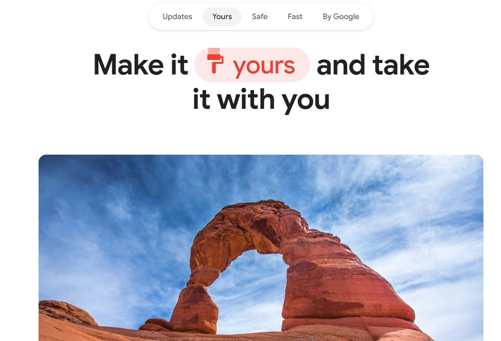
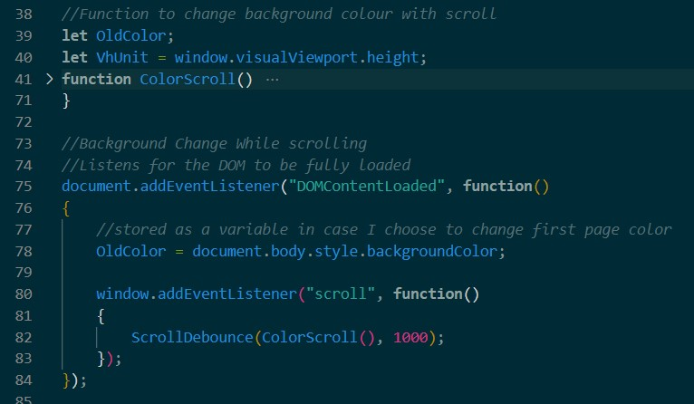
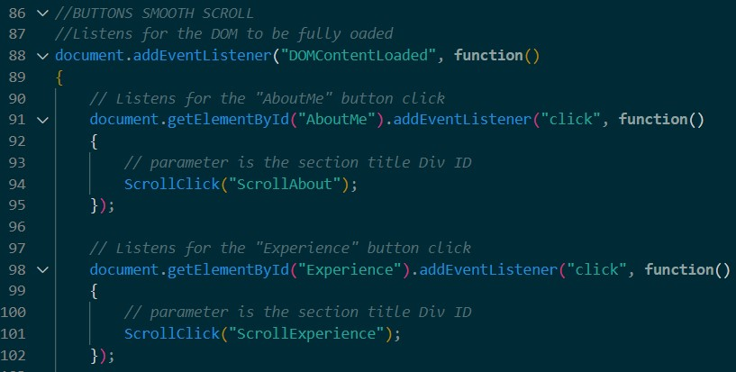

This Very Website!
Hi! Here, I can explain a little bit more about this website, as well as some of the
processes and problems I had to solve along the way.

Originally, when I wanted to build my own website, I stated looking for inspiration on the
general experience or feeling that it gives off when someone browses through it. I looked
at some student examples, a few portfolios, but I took a lot of inspiration from the Google
Chrome download page. Yes... the download page.
Dynamic Background

One feature that I wanted to have was a dynamic background that would change in colour as
the user scrolls to different sections. This was one of the first features that I tackled
working on this project, and proved to be a great opportunity to learn more about DOM
manipulation.
Using the built-in methods and a few conditional statements, I was able to lay down the
foundation for how the logic of the script works. I obtained the window height and
compared it with the element's height to check if a background change was necessary.
This is where I learned about the DOMContentLoaded event, and how this may affect scripts
if not properly checked (I didn't at first). Since I didn't wrap my scripts with this
event listener, they did not load properly and did not function as intended. This was
eventually rectified and now works properly with the right event listener!
This next major issue was debouncing this eventlistener. Since this script uses a scroll
event listener, it runs a check with every scroll. This is unnecessary for something so
trivial, so it was crucial to debounce this in order to greatly improve resouce management.
This was implemented using various timers that would ensure executables would not run
unless the scrolling has stopped for a short time.
Navigation

I noticed a fair number of student examples and professional portfolios were missing
navigation features, making it difficult to reach different pages. So, I decided to make
this aspect a main feature within my website.
Using Chrome as a reference point, I implemented a hidden sticky banner with navigation
buttons that appears when scrolling down. This was done with the built-in methods to find
the height of the viewport and a few conditional statements to trigger the corresponding
executables to make the banner visable.
The navigation button scripts posed their own small issues. I created a modular scroll
function that finds the HTML element ID, and scrolls it into view. However, the issue
is that I specifically wanted the viewport to be at a certain height relative to the
section. The built-in scroll methods don't currently have an option for this, so it
required some extra thought and care to store the offset height and to scroll that
element's offset positon.
The last feature that I felt was crucical is the return or home button. I found that many
personal websites often had no way to navigate back to the main page or to other sections.
So, this addition felt more necessary than others.